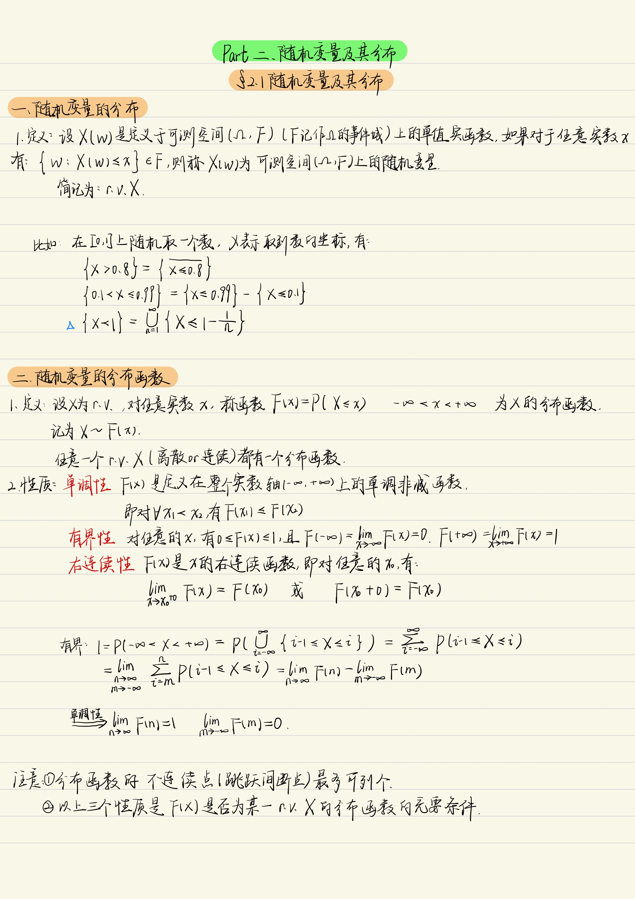
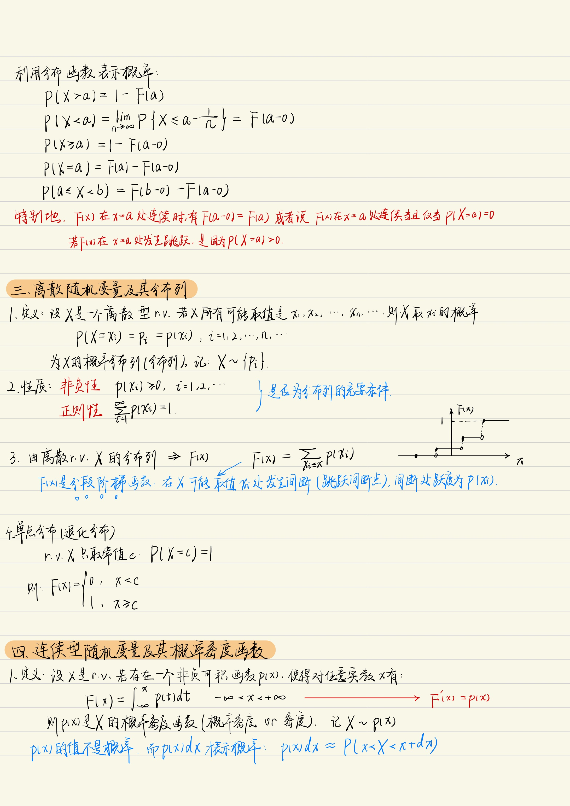
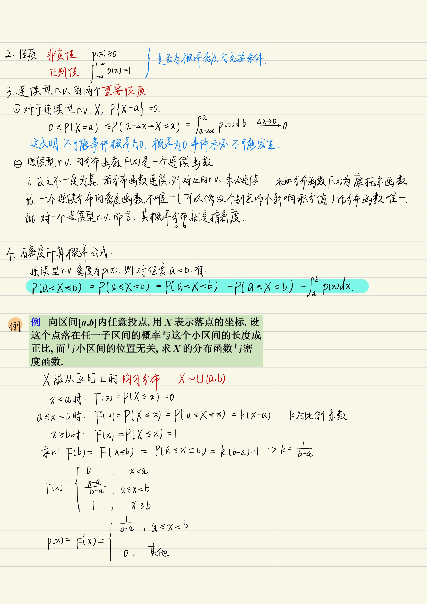
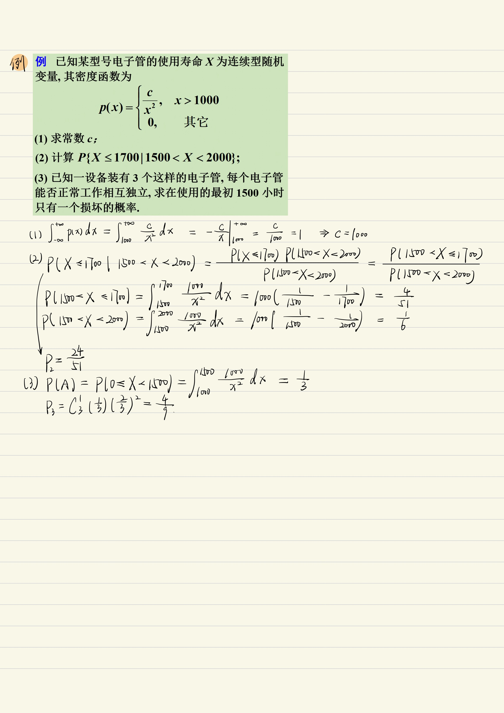

文章
120
标签
212
分类
56
主页
博文
分类
标签
归档
留言板
StudyinCAU
搜索
主页
博文
分类
标签
归档
留言板
第一节 随机变量及其分布
发表于
2024-03-31
|
更新于
2024-04-26
|
概率论
第二章 随机变量及其分布
|
字数总计:
6
|
阅读时长:
1分钟
|
阅读量:
下载PDF点这里




文章作者:
小楼一夜听春雨 & Rico
文章链接:
https://studyincau.github.io/2024/03/31/gai-lu-lun-2-1-sui-ji-bian-liang-ji-qi-fen-bu/
版权声明:
本博客所有文章除特别声明外，均采用
CC BY-NC-SA 4.0
许可协议。转载请注明来自
StudyinCAU
！
随机变量
分布函数
概率分布列
概率密度函数
上一篇
分析程序运行过程，说明拷贝造函数的调用过程
下一篇
计数问题-数位统计DP
评论
小楼一夜听春雨 & Rico
Study
文章
120
标签
212
分类
56
Follow Me
公告
这是一个分享学习笔记(资料)的网站，欢迎一起学习、交流。如果你有好的文章也想分享，可以发邮箱(邮箱在公告上方~)[若出现渲染问题或加载过慢，推荐用谷歌或Edge浏览器打开]
最新文章
电力需求预测赛
2024-07-22
Python基本语法
2024-07-22
基于术语词典干预的机器翻译挑战赛
2024-07-17
第五节 区间估计
2024-06-27
Python可视化
2024-06-01
搜索
数据库加载中